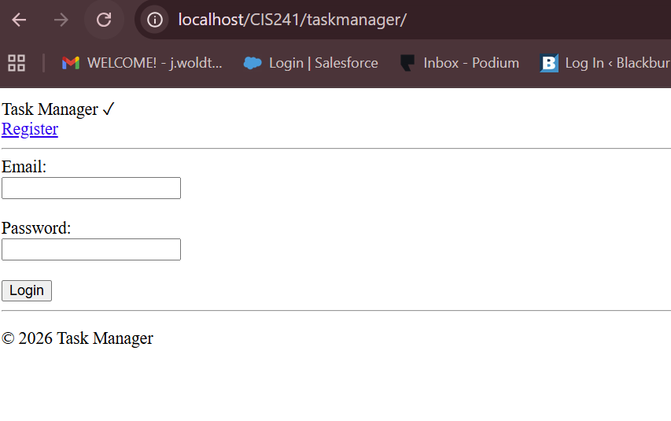

CIS241 Dynamic Web Project
Task Manager Web Application
Project Description:
This project is a dynamic web application developed using PHP and MySQL. The Task Manager allows users to create, view, and manage tasks through a web-based interface, demonstrating database-driven web development.
Technologies Used:
- PHP
- MySQL
- HTML / CSS
- JavaScript
Key Features:
- Task creation and management
- Dynamic data retrieval from a MySQL database
- Form handling using PHP
- Database interaction using SQL queries
- User authentication with login and registration
Working Demo:
View Task Manager ApplicationScreen Capture:

Sample Code:
<?php
$conn = new mysqli("localhost", "root", "", "taskmanager");
if ($conn->connect_error) {
die("Connection failed: " . $conn->connect_error);
}
$sql = "SELECT * FROM tasks";
$result = $conn->query($sql);
?>
This code demonstrates connecting to a MySQL database using PHP and retrieving task data dynamically for display within the application.